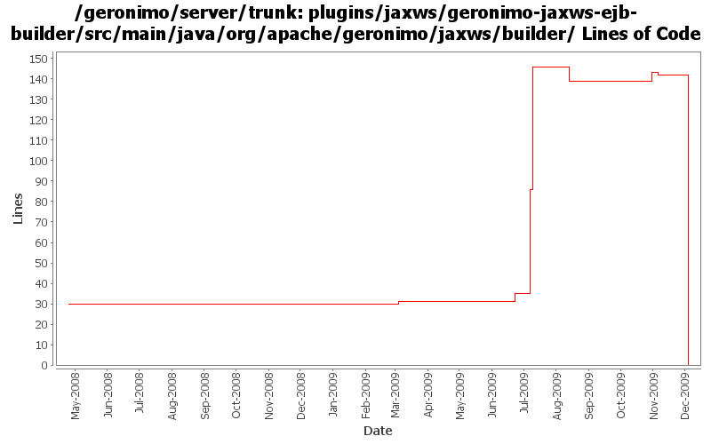

[root]/plugins/jaxws/geronimo-jaxws-ejb-builder/src/main/java/org/apache/geronimo/jaxws/builder

| Author | Changes | Lines of Code | Lines per Change |
|---|---|---|---|
| Totals | 16 (100.0%) | 214 (100.0%) | 13.3 |
| gawor | 5 (31.3%) | 94 (43.9%) | 18.8 |
| djencks | 3 (18.8%) | 64 (29.9%) | 21.3 |
| rickmcguire | 3 (18.8%) | 55 (25.7%) | 18.3 |
| jdillon | 3 (18.8%) | 1 (0.5%) | 0.3 |
| xuhaihong | 2 (12.5%) | 0 (0.0%) | 0.0 |
GERONIMO-4967 Enable Axis2 plugin in Geronimo 3.0
1. Rename some packages to avoid the exporting conflict
2. Use those bundlized dependency
0 lines of code changed in 2 files:
fix problem in EarConfigBuilder when constructing sub-configurations for wars. Rename DeploymentContext.getBundle to getDependencyBundle to try to make it clearer that it is temporary and not always available. Start updating pluto/console stuff for pluto 2.
1 lines of code changed in 1 file:
more bundle dependency cleanup
1 lines of code changed in 1 file:
More plugin cleanup
54 lines of code changed in 2 files:
GERONIMO-4645 use jacc ejb ws auth for jetty6, simplify SOAPHandler interface
0 lines of code changed in 1 file:
GERONIMO-4645 Make ejb ws security more jacc friendly, implement transport guarantees for jetty7 using jacc. See jira for more comments
63 lines of code changed in 1 file:
prefer openejb-jar.xml instead of geronimo-openejb.xml descriptor in ejb ws deployer and pass additional properties object to SoapHandlers
80 lines of code changed in 1 file:
pass ConfigurationFactory instead of securityRealmName
5 lines of code changed in 1 file:
Don't rely on config substitution properties in ejb jax-ws deployers (GERONIMO-4554)
9 lines of code changed in 1 file:
support for specifying a list of http methods that should be secured for ejb-based web services (GERONIMO-4015)
0 lines of code changed in 2 files:
More loggers back to static
1 lines of code changed in 1 file:
(GERONIMO-3985) Use SLF4J as the primary logging facade for Geronimo
0 lines of code changed in 2 files: